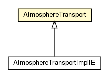

hu.sch.kfc.client.atmosphere
Class AtmosphereTransport

java.lang.Object
 hu.sch.kfc.client.atmosphere.AtmosphereTransport
hu.sch.kfc.client.atmosphere.AtmosphereTransport
- Direct Known Subclasses:
- AtmosphereTransportImplIE
public class AtmosphereTransport
- extends Object
| Methods inherited from class java.lang.Object |
clone, equals, finalize, getClass, hashCode, notify, notifyAll, toString, wait, wait, wait |
ATMOSPHERE_VERSION
protected static final String ATMOSPHERE_VERSION
- See Also:
- Constant Field Values
X_ATMOSPHERE_TRANSPORT
protected static final String X_ATMOSPHERE_TRANSPORT
- See Also:
- Constant Field Values
TRANSPORT_STREAMING
protected static final String TRANSPORT_STREAMING
- See Also:
- Constant Field Values
TRANSPORT_POLLING
protected static final String TRANSPORT_POLLING
- See Also:
- Constant Field Values
xmlHttpRequest
protected com.google.gwt.xhr.client.XMLHttpRequest xmlHttpRequest
callback
protected hu.sch.kfc.client.atmosphere.AtmosphereCallback callback
aborted
protected boolean aborted
expectingDisconnection
protected boolean expectingDisconnection
readedSofar
protected int readedSofar
ssf
protected static final com.google.gwt.user.client.rpc.SerializationStreamFactory ssf
AtmosphereTransport
public AtmosphereTransport()
setCallback
public void setCallback(hu.sch.kfc.client.atmosphere.AtmosphereCallback callback)
start
public void start()
disconnect
public void disconnect()
onXMLHttpRequestReadyStateChange
protected void onXMLHttpRequestReadyStateChange(com.google.gwt.xhr.client.XMLHttpRequest request)
addRequestHeaders
protected void addRequestHeaders()
onLoaded
protected void onLoaded(int statusCode,
String responseText)
onReceiving
protected void onReceiving(int statusCode,
String responseText)
onReceiving
protected void onReceiving(int statusCode,
String responseText,
boolean connected)
Copyright © 2011. All Rights Reserved.